Privacy by DesignApple Watch nativeNo subscriptionApple Music built in
Your wrist guides every breath. No screen needed.
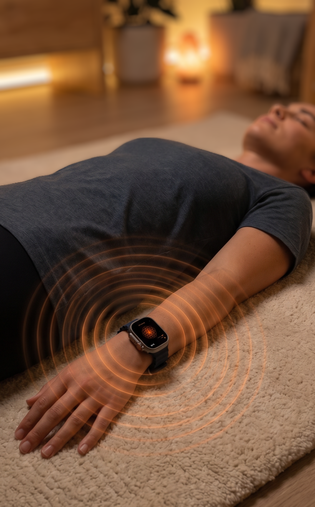
Haptic pulses rise for inhale, fall for exhale. Close your eyes. Just feel.
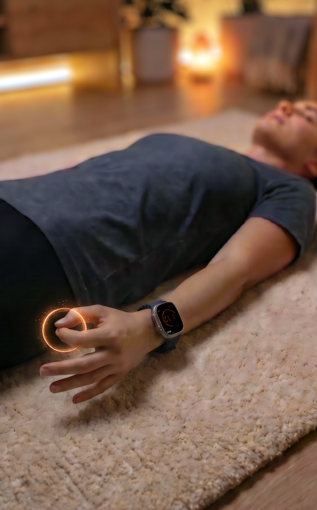
Holding your breath during Tummo? Double Tap ends the retention. Eyes stay closed. Fingers decide.
Your Technique
Different intentions. One breathwork app.
Just like on the Watch — swipe left and right.
2 / 3
Navigate
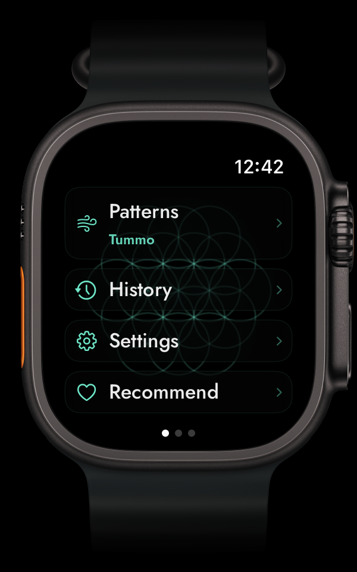
Your breathwork system. Patterns, History, Settings — on your wrist.
Breathe
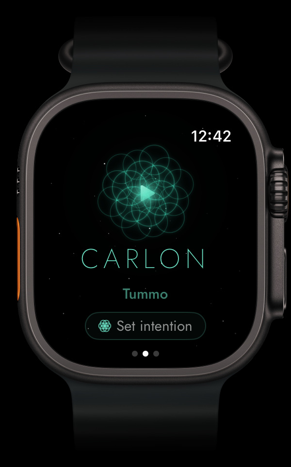
One tap. Flower of Life guides your breath. Haptics do the rest.
Your Music
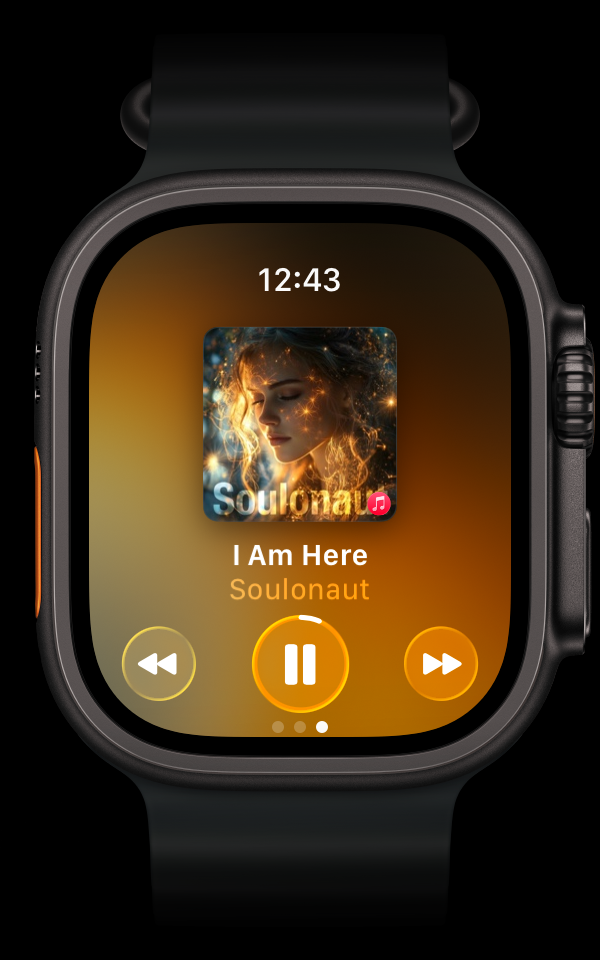
Apple Music natively integrated. Your playlist meets your practice.
Go deeper
1 / 3
16 Techniques
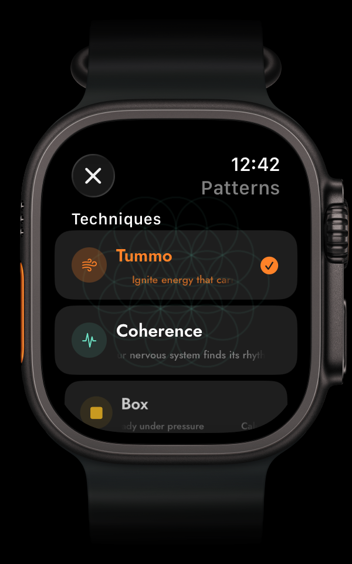
From Tummo fire to Coherence calm. Tactical Box to 4-7-8 sleep. Pick yours.
Tummo — Fire Breath
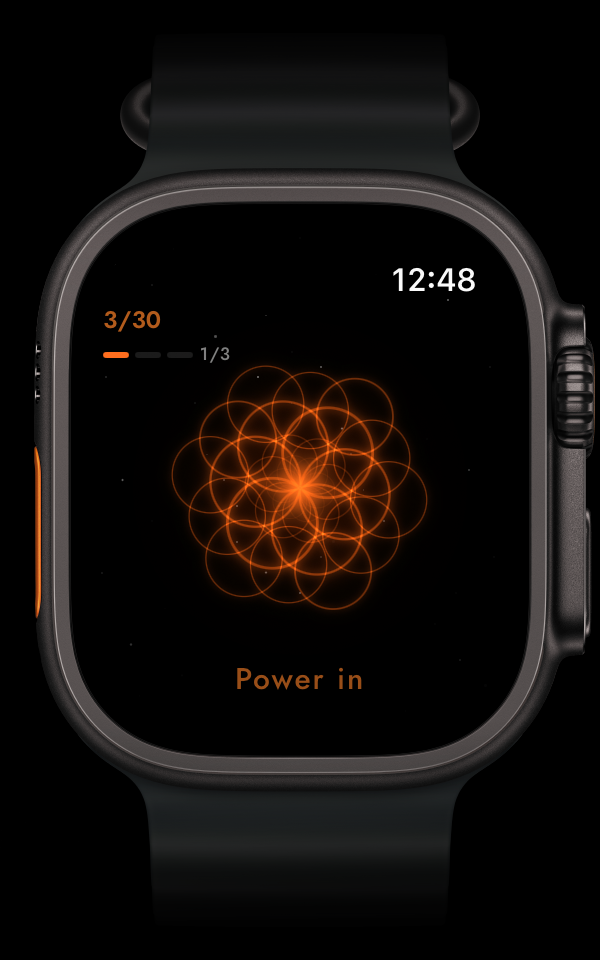
Popularized by Wim Hof. 30 power breaths. Retention with Double Tap. Your Watch counts — your eyes stay closed.
Build Your Own
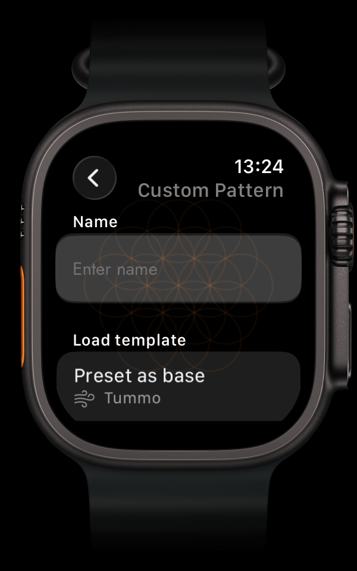
Your technique doesn't exist? Build it. Name it. The app becomes infinite.
Your heart rate just dropped 18 bpm. The dive reflex — visible on your wrist.
During Tummo breath holds, your heart rate drops as the mammalian dive reflex kicks in. CARLON shows it — live, on your wrist. No other breathwork app does this.
Your body
Real data. Not promises.
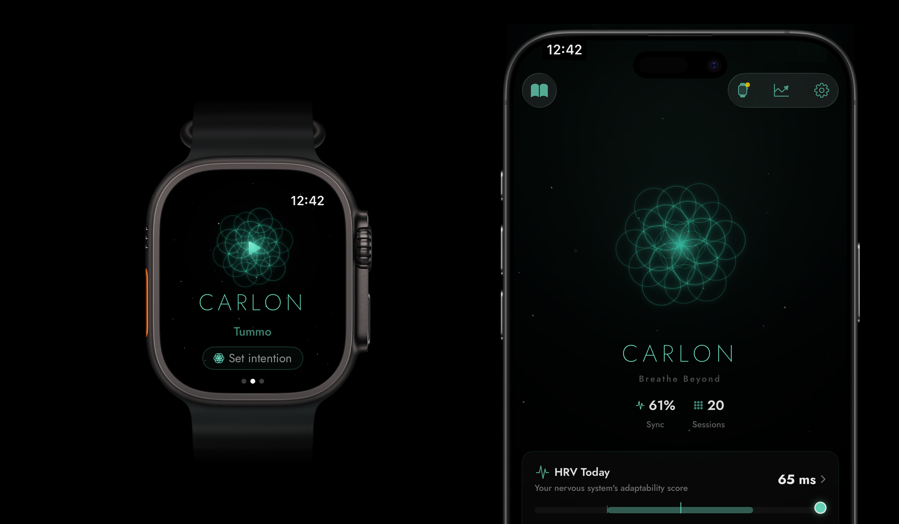
Your breathwork on your wrist. The details where you can actually read them.
1 / 6
Watch · Heart Rate
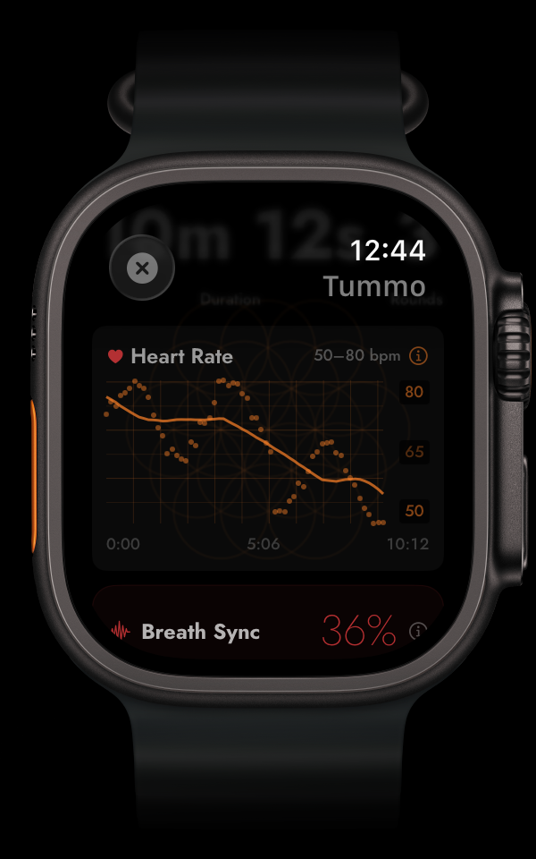
Full session HR curve. See the dive reflex as your heart rate drops during holds.
Watch · Breath Sync
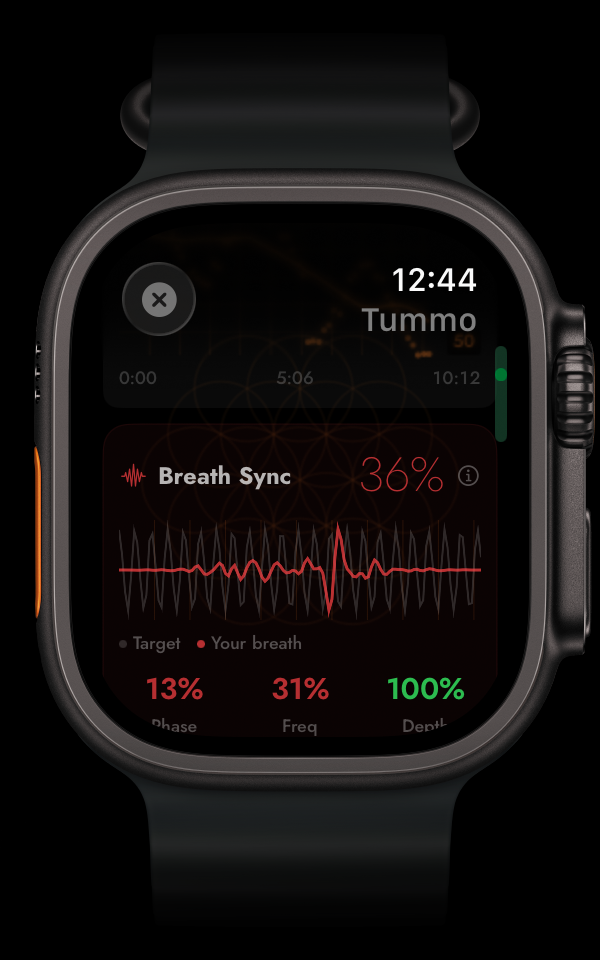
How closely heart and breath move together. Phase, frequency, depth.
Watch · Retention
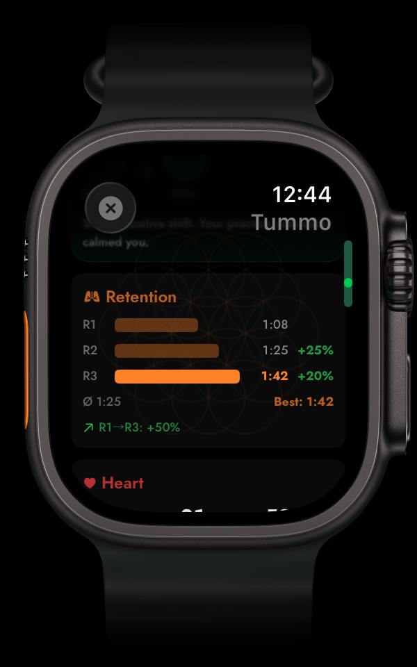
Round 1: 1:08. Round 3: 1:42. Your body adapts. Tracked on your wrist.
iPhone · Heart Rate
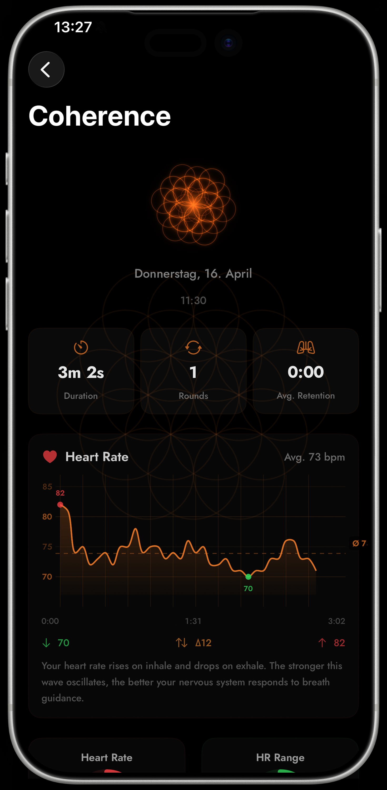
Every heartbeat plotted. See exactly where your nervous system shifted.
iPhone · Insights
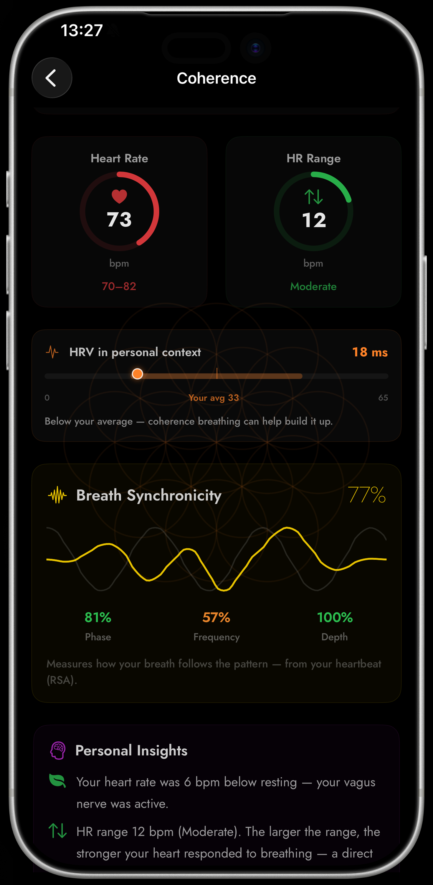
Personal coaching: HRV in context, breath synchronicity, what to do next.
iPhone · Progress
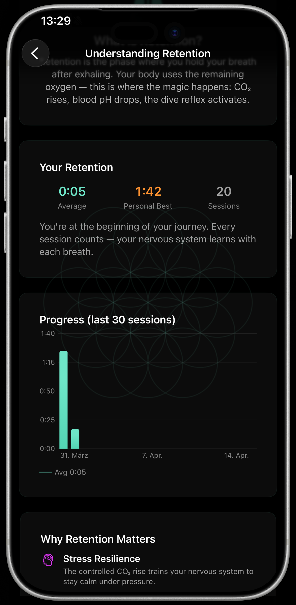
Every session stronger. 30-session trend. Personal best. Body adapting.
The science
Every breath has a reason.
Not guessing. Not esoteric. Evidence-based — and explained in your app.
1 / 2
Breathing Wiki
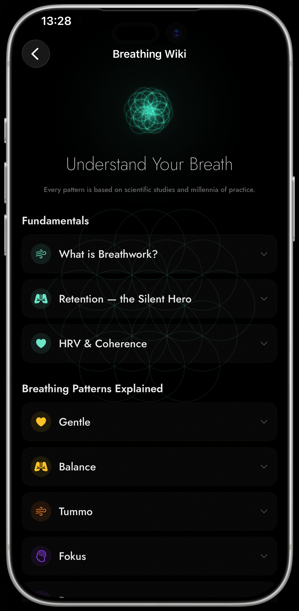
What is Breathwork? Why Retention? How HRV works. Every technique explained with the science behind it.
Stanford UniversityPNASFrontiers in PsychologyCell Reports Medicine
[1] Ma et al. (2017) "Effect of Diaphragmatic Breathing on Attention, Negative Affect and Stress" Frontiers in Psychology 8:874.
[2] Lehrer & Gevirtz (2014) "Heart rate variability biofeedback: mechanisms and models" Frontiers in Psychology 5:756.
[3] Russo et al. (2017) "The physiological effects of slow breathing" Breathe 13(4):298-309.
[4] Balban et al. (2023) "Brief structured respiration practices enhance mood" Cell Reports Medicine 4(1):100895. n=111.
Origin
Born from our breath.
Jan & Carina · Founders of Vitalkultur
When our son Carlon was born on a January night in 2026, breathwork became more than a technique — it became the way we stayed grounded together.
We couldn't find an app that matched what breathing actually feels like. So we built one during night shifts — testing thousands of haptic patterns to find the perfect rhythm for every breath.
One night, the family was asleep. I put CARLON on the lowest haptic level — barely there, just a whisper on my wrist. Coherence breathing, 5.5 breaths per minute. The vibration was so subtle that I had to listen for it. And that's exactly what pulled me out of my head. No thoughts about code. No plans for tomorrow. Just the faintest pulse, rising for inhale, falling for exhale. I fell asleep mid-session.
That was the moment I knew it works. Not because of the data — but because I stopped thinking and started breathing.
Yes — CARLON is Watch-first. Haptic guidance, Double Tap, and wrist-based biometrics all require it. The iPhone companion provides session history, insights, and the Breath Composer. Requires Apple Watch Series 4+ with watchOS 11.
Is there really no subscription?
€14,99, one-time purchase. All 16 techniques, custom creation, haptic guidance, live biometrics, and Breath Composer included. No recurring charges.
Does it integrate with Apple Health?
Yes. CARLON writes Mindful Minutes and captures live heart rate. You get session RMSSD, HR sparklines, dive reflex detection, and HR Range tracking.
Is this a medical device?
No. CARLON is a non-regulated wellness app. Not intended to diagnose, treat, cure, or prevent any disease. Consult a physician before starting breathwork with cardiovascular or neurological conditions.
What makes it different from Calm or Headspace?
CARLON guides through haptics, not screens. You close your eyes and feel every breath. Plus: real biometrics (heart rate, HRV, breath sync) — not just a timer. And no subscription.